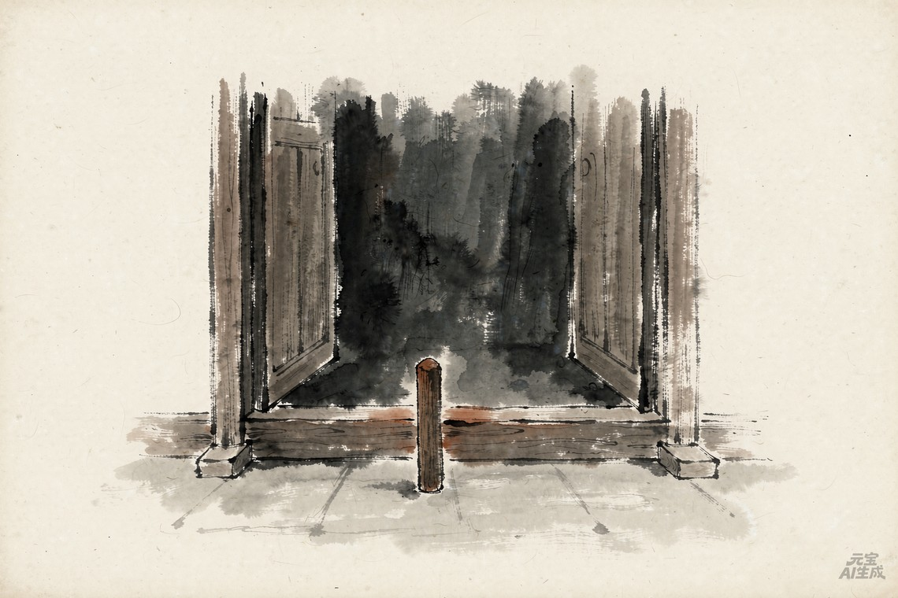
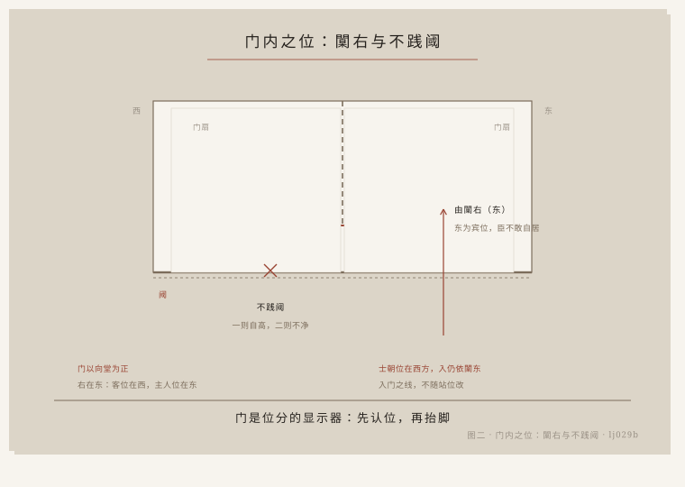

曲礼上 · 一·三十 · 第 29 课
这一节只有两句：大夫、士进出君之门，走门橛的右边；不踩门槛。
说什么事：大夫士出入君门，由闑右，不践阈。
落在哪一层：教。上节是臣入人家之门，这节是臣入君之门——同一道门，位分不同，走法就不同。
为何编在此位：一·二十九讲做客入门，此节紧接君门：门是同一个门，礼按位分换一套。
【经】大夫士出入君門，由闑右，不踐閾。
闑 门中央所竖的短木，即门橛。疏引：「中央有闑，闑傍有枨。」
右 郑注只三字：「臣统于君。」疏解「右」为东：「门以向堂为正，右在东。……臣皆统于君，不敢自由宾，故出入君门恒从闑东也。」
阈 疏：「践，履也。阈，门限也。」
不践阈的二义 疏：「出入不得践履门限，所以尔者，一则自高，二则不净，并为不敬。」
大夫、士进出国君的门，从门橛右边走，不踩门槛。
两句其实是一句：君门之中，臣不敢自居宾位，也不敢据守中间。走右是让，不践阈是不占。
第一层 「由闑右」是位分之让 郑注四字「臣统于君」是全节的钥匙：宾主之礼，客入由左、主入由右；而臣入君门，不敢以宾自处，故「恒从闑东」。同一道门，宾走一条线，臣走另一条线——礼在这里把「我是谁」写成了走法。
第二层 「不践阈」的第一义：自高 门槛是内外之分。一脚踏上去，便是据其中而临两边。疏说「一则自高」，说的不是姿势，是位置：门槛不是给你站的。
第三层 「不践阈」的第二义：不净 门槛人多踏之，尘秽所聚。以足履之，再入堂，是把外面的土带进来。此义极琐，却是礼的真面目：礼常从小处防起。
第四层 士的朝位与入门之线 疏补一条有意思的细节：士的朝位本在西方东面，入时仍依闑东。位在西而走东，说明「入门之线」不随站位改——规矩独立于方便。
与今日何干 今日进机关、进会场，谁先走、走哪边，多凭习惯。此节给的道理还成立：门是位分的显示器；在别人的门上，先认自己的位置，再抬脚。
| 左 | 右 |
|---|---|
| 大夫士出入君门 | 臣统于君 |
| 由闑右 | 门以向堂为正，右在东 |
| 不践阈 | 一则自高，二则不净 |
| 士朝位在西，入仍依闑东 | 入门之线不随位改 |

